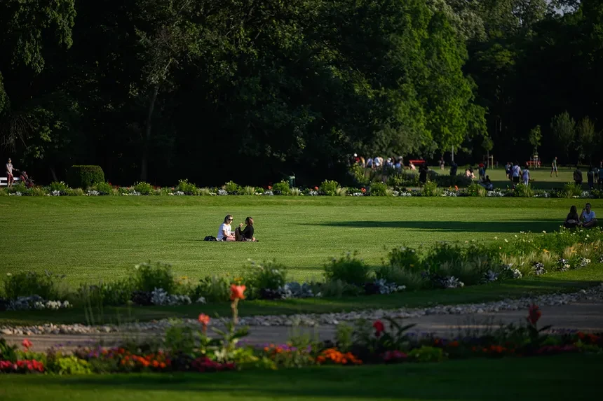
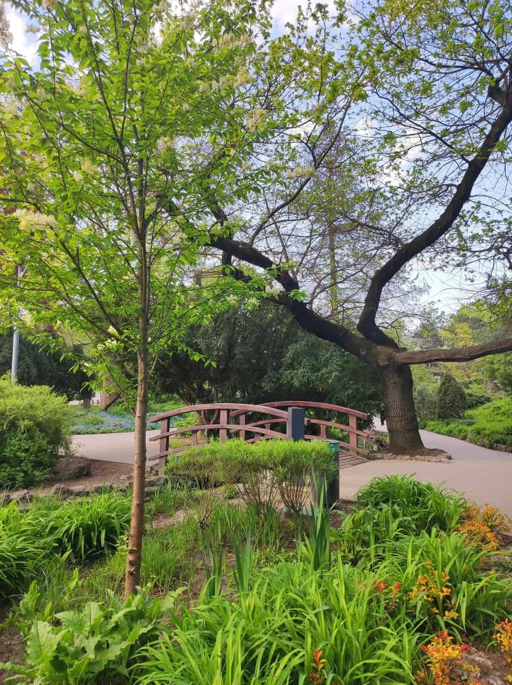
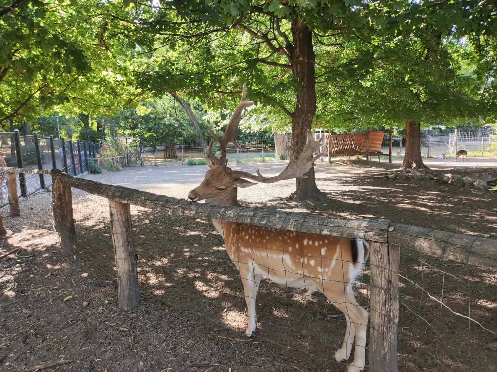

Mielőtt bármi más
Tudom, hogy sok minden történt az elmúlt napokban, és ez téged is nagyon rosszul érintett. Megértem, ha nem volt kedved beszélni velem, és rossz kedved volt...
Egy kis meglepetés
Szeretném, ha jobban éreznéd magad, ezért kitaláltam magunknak egy kis programot — szerintem élveznéd.
Egy fontos kérdés
Eljössz velem randizni?
(próbáld csak megnyomni a "Nem" gombot...)
Válassz egyet
Mit csinálnál szívesen a hétvégén?
Margit sziget
Ezt találtam ki neked



Már csak egy apróság
Mikor lenne neked jó?
Minden készen áll
Most pedig küldd el nekem ezt a képernyőt screenshotban.